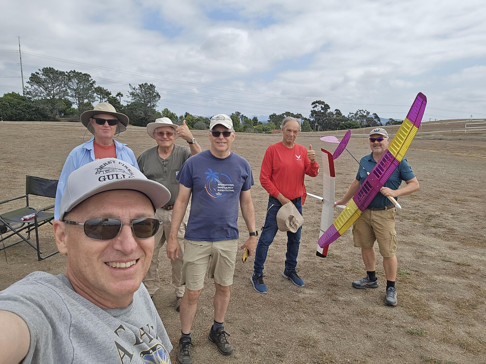
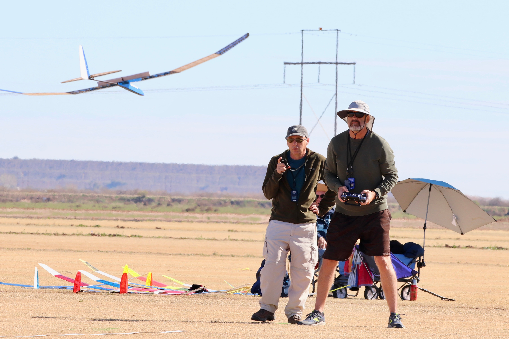

Host an F3L Contest
Interested in hosting an F3L contest? Whether you're organizing a casual half-day event for your local club or a major two-day championship, we're here to help. This page provides everything you need to know about running a successful F3L competition.
Contest Types
- Half-Day Contests: Great for local clubs, typically 3-5 rounds, single day format
- Two-Day Major Contests: Full championship format, 7-10 rounds over two days
- Series Events: Contests that count toward the F3L Contest Series standings
Use the tabs below to find specific information for your contest type.
Contest Organization
Hosting a Half-Day Contest
Half-day contests are perfect for introducing pilots to F3L competition in a relaxed, club-friendly format.
Format Overview
- Duration: 3-4 hours of flying time
- Rounds: Typically 3-5 rounds
- Pilots: Usually 8-15 participants
- Best for: Club events, practice contests, introducing new pilots
Minimum Requirements
- Flying site with 300ft radius clear area minimum
- AMA field insurance, ideally with a FRIA
- Contest Director with F3L rules knowledge
- Timing system (stopwatches acceptable for small events)
- Launch and landing zone markers
Simplified Setup
Equipment Needed:
- 3-4 stopwatches or timers
- Laptop/tablet for scoring (F3XVault or spreadsheet)
- Launch area markers and landing zone markers
- Canopy/tent for shade (optional but recommended)
- Tables and chairs for registration and scoring
Typical Schedule:
- 8:00 AM: Setup and pilot registration
- 8:30 AM: Pilot meeting and rules briefing
- 9:00 AM: Flying begins (3-5 rounds)
- 1:30 PM: Contest concludes, awards
Scoring Options
For half-day contests, you can use:
- F3XVault: Professional scoring system (recommended if joining series)
- Spreadsheet: Simple Excel/Google Sheets template for informal events
- Manual Scoring: Paper score sheets for very small events
Hosting a Two-Day Major Contest
Two-day contests provide a full championship experience with more rounds, better conditions assessment, and higher-level competition.
Format Overview
- Duration: Two full days (typically Saturday-Sunday, plus optional Friday practice)
- Rounds: 7-10 rounds total
- Pilots: 15-30+ participants
- Best for: Regional championships, series events, attracting out-of-state pilots
Full Requirements
- Excellent flying site with ample space for spectators and camping
- AMA sanctioning (required)
- Experienced Contest Director
- F3XVault scoring system setup
- 2-4 volunteers
- Professional timing equipment
- Multiple canopies/tents for pilots and officials
- Restroom facilities
- Optional camping or lodging information for out-of-town pilots
Equipment & Infrastructure
Timing & Scoring:
- Electronic timing system (recommended)
- Backup manual timers for each flight group
- Computer running F3XVault
- Reliable internet connection or mobile hotspot
- Generator or reliable power source
- Battery backup for electronics
Field Setup:
- Clearly marked launch zones with staging area
- Defined landing zones with accuracy markers
- Safety boundary markers
- Multiple canopies: pilots, timers, scoring station
- Adequate tables and chairs
- PA system for announcements (helpful but optional)
- First aid kit and emergency plan
Two-Day Schedule
Friday (Optional):
- Practice day and early registration
- Social gathering in the evening
Saturday:
- 7:00-8:00 AM: Registration, frequency control
- 8:00-8:30 AM: Pilot meeting and rules review
- 8:30 AM: Flying begins (4-5 rounds)
- 12:00-1:00 PM: Lunch break
- 1:00 PM: Afternoon rounds continue
- 5:00-6:00 PM: Day concludes, standings posted
Sunday:
- 8:00-8:30 AM: Morning briefing
- 8:30 AM: Flying begins (3-5 rounds)
- 12:00-1:00 PM: Lunch break
- 1:00 PM: Final rounds if needed
- 2:00-3:00 PM: Contest concludes
- 3:00 PM: Awards ceremony
Volunteer Coordination
Key roles for a two-day contest:
- Contest Director: Overall management and final decisions
- Assistant CD: Helps manage operations, handles issues
- Scorekeeper: Manages F3XVault, records all flights
- Registration: Handles check-in, payments, AMA verification
- Protest committe :
Budget Planning
Major contests require more investment:
- AMA sanctioning: ~$50-100
- Entry fees: $40-80 per pilot
- Awards/trophies: $200-500 for top finishers
- Equipment rental (if needed): $100-300
- Supplies (markers, score sheets, etc.): $100-200
- Total budget: $500-1500 depending on scale
Promotion
To attract pilots from outside your area:
- Post contest information 2-3 months in advance
- List on F3XVault calendar
- Announce on RCGroups F3L forum
- Coordinate with series organizers for promotion
- Provide lodging and camping information
- Create event on social media
Join the F3L Contest Series
Want your contest to be part of the official F3L Contest Series? We welcome high-quality events that follow FAI F3L rules and provide an excellent experience for competitors.
Series Benefits
- Promotion through series website and communications
- Attract pilots from across the region and nation
- Contest results count toward series championship
- Support and mentorship from series organizers
- Access to templates, resources, and best practices
- Connection to the national F3L community
Series Requirements
- Contest Format: Must be a two-day event (7+ rounds preferred)
- FAI Rules: Strict adherence to official FAI F3L rules
- F3XVault Scoring: Required for series standings integration
- AMA Sanctioning: Must be AMA sanctioned
- Quality Site: Excellent flying location with adequate facilities
- Experienced CD: Contest director with F3L experience
- Advance Notice: Contest date confirmed 3+ months in advance
Application Process
How to Apply
- Download the Contest Bulletin Template
📄 Download Contest Bulletin Template - Complete all sections of the template including:
- Contest name, dates, and location
- Site description and directions
- Registration information and fees
- Schedule and format details
- Contest Director information
- Lodging and camping details
- Submit your completed bulletin to:
info@F3Lcontestseries.org - Series Committee Review
Your submission will be reviewed by the Series Committee - Approval & Promotion
Once approved, your contest will be added to the series calendar and promoted
Series Committee
Contest applications are reviewed by:
- Greg McGill
- John McNeil
- Gary Fogel
- Ed LaCroix
- John Ihlein
The committee evaluates proposals based on site quality, organizer experience, dates, and overall fit with series goals.
Timeline
Plan ahead for series inclusion:
- 6+ months before: Submit initial application
- 5 months before: Committee review and approval
- 4 months before: Contest added to series calendar
- 3 months before: Full promotion begins
- 2 months before: Registration opens
- Contest weekend: Execute your event!
Support Available
Series organizers can provide:
- F3XVault setup assistance
- Sample materials and templates
- Advice on logistics and best practices
- Promotion through series channels
- Connection with experienced contest directors
Questions?
Contact the series organizers at info@F3Lcontestseries.org with any questions about joining the series or hosting a contest.

Small monthly contest

Landing competition is a key scoring element
General Resources
Resources applicable to all contest types:
Official Rules & Scoring
- FAI F3 Soaring Rules (PDF) - F3L is in Section 4.3.6
- F3XVault Scoring System - Industry standard for F3 competitions
Additional Resources
More templates and guides will be added here as the series develops. Check back regularly for updates!